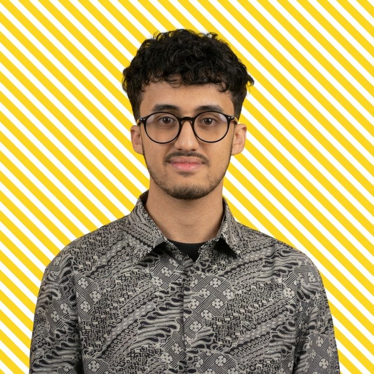

Reyhan
Al-katiri
I take clunky, old-school systems and rebuild them into smart, automated cloud tools using Microsoft Power Platform and AI.

Case file
Tap any card for the full story. The Power Platform one opens an interactive architecture diagram and a live invoice demo.
Experience
From healthcare automation to client delivery. The through-line: make slow, brittle things fast and reliable.
Freelance Software Developer
Modern web and mobile apps for clients: React/Next.js front ends, Flutter mobile, delivered end to end.
Full Stack Developer Intern
Planned wireframes, shipped production features and fixed full-stack integration issues for business web apps.
Full Stack Developer Intern
Improved site performance 40%, cut load times 25% and reduced bounce rate 20%.
RPA Intern
Built Blue Prism workflows for healthcare admin: process mapping, testing and reliable bot operation.
Bachelor of Computer & Information Science
Software Development major · Web Development minor. Also: Certificate in SQL Server Implementation & Support (AMES).
Toolbox
Grouped so you can match it against a job spec in about five seconds.
Power Platform
Power PagesPower AutomateDataverseCustom connectorsCopilot StudioAI BuilderFront end
ReactNext.jsTypeScriptTailwindFramer MotionHTML/CSSBack end & data
Node.jsREST APIsSQL / MySQLSupabaseFirebaseJavaAutomation
Blue PrismProcess mappingRPA → cloud migrationDocument AIAlso
Flutter / DartUnity / C#WordPressFigmaGitDNS & emailThe human part
I’m a freelance developer in Auckland (DevForge) with a Bachelor’s in Computer & Information Science from AUT. Outside work I’m obsessed with DIY: give me spare parts, limited tools and an idea, and I’ll build something that actually works.
That’s how I approach enterprise systems too: constraints first, then a solution that survives contact with reality.
Credentials: Bachelor of Computer & Information Science (AUT) · SQL Server certificate · Power Platform certification planned · references available on request from previous technical leads and managers.
Got a legacy system that needs retiring?
I reply fast. Faster than a UI scraper recovers from a button moving two pixels.